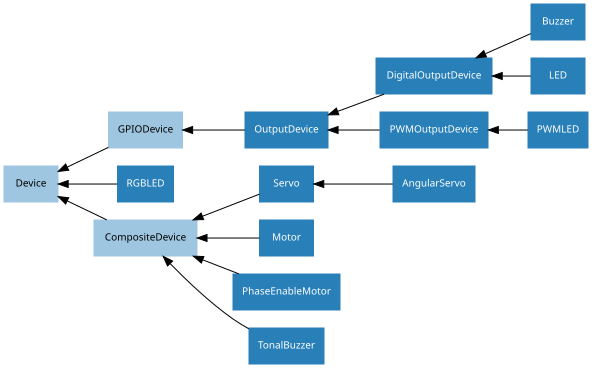

15. API - Output Devices
These output device component interfaces have been provided for simple use of everyday components. Components must be wired up correctly before use in code.
Note
All GPIO pin numbers use Broadcom (BCM) numbering by default. See the Pin Numbering section for more information.
15.1. Regular Classes
The following classes are intended for general use with the devices they represent. All classes in this section are concrete (not abstract).
15.1.1. LED
- class gpiozero.LED(*args, **kwargs)[source]
Extends
DigitalOutputDeviceand represents a light emitting diode (LED).Connect the cathode (short leg, flat side) of the LED to a ground pin; connect the anode (longer leg) to a limiting resistor; connect the other side of the limiting resistor to a GPIO pin (the limiting resistor can be placed either side of the LED).
The following example will light the LED:
from gpiozero import LED led = LED(17) led.on()
- Parameters:
pin (int or str) – The GPIO pin which the LED is connected to. See Pin Numbering for valid pin numbers. If this is
NoneaGPIODeviceErrorwill be raised.active_high (bool) – If
True(the default), the LED will operate normally with the circuit described above. IfFalseyou should wire the cathode to the GPIO pin, and the anode to a 3V3 pin (via a limiting resistor).initial_value (bool or None) – If
False(the default), the LED will be off initially. IfNone, the LED will be left in whatever state the pin is found in when configured for output (warning: this can be on). IfTrue, the LED will be switched on initially.pin_factory (Factory or None) – See API - Pins for more information (this is an advanced feature which most users can ignore).
- blink(on_time=1, off_time=1, n=None, background=True)
Make the device turn on and off repeatedly.
- Parameters:
on_time (float) – Number of seconds on. Defaults to 1 second.
off_time (float) – Number of seconds off. Defaults to 1 second.
n (int or None) – Number of times to blink;
None(the default) means forever.background (bool) – If
True(the default), start a background thread to continue blinking and return immediately. IfFalse, only return when the blink is finished (warning: the default value of n will result in this method never returning).
- off()
Turns the device off.
- on()
Turns the device on.
- toggle()
Reverse the state of the device. If it’s on, turn it off; if it’s off, turn it on.
- property is_lit
Returns
Trueif the device is currently active andFalseotherwise. This property is usually derived fromvalue. Unlikevalue, this is always a boolean.
- property pin
The
Pinthat the device is connected to. This will beNoneif the device has been closed (see theclose()method). When dealing with GPIO pins, querypin.numberto discover the GPIO pin (in BCM numbering) that the device is connected to.
- property value
Returns 1 if the device is currently active and 0 otherwise. Setting this property changes the state of the device.
15.1.2. PWMLED
- class gpiozero.PWMLED(*args, **kwargs)[source]
Extends
PWMOutputDeviceand represents a light emitting diode (LED) with variable brightness.A typical configuration of such a device is to connect a GPIO pin to the anode (long leg) of the LED, and the cathode (short leg) to ground, with an optional resistor to prevent the LED from burning out.
- Parameters:
pin (int or str) – The GPIO pin which the LED is connected to. See Pin Numbering for valid pin numbers. If this is
NoneaGPIODeviceErrorwill be raised.active_high (bool) – If
True(the default), theon()method will set the GPIO to HIGH. IfFalse, theon()method will set the GPIO to LOW (theoff()method always does the opposite).initial_value (float) – If
0(the default), the LED will be off initially. Other values between 0 and 1 can be specified as an initial brightness for the LED. Note thatNonecannot be specified (unlike the parent class) as there is no way to tell PWM not to alter the state of the pin.frequency (int) – The frequency (in Hz) of pulses emitted to drive the LED. Defaults to 100Hz.
pin_factory (Factory or None) – See API - Pins for more information (this is an advanced feature which most users can ignore).
- blink(on_time=1, off_time=1, fade_in_time=0, fade_out_time=0, n=None, background=True)
Make the device turn on and off repeatedly.
- Parameters:
on_time (float) – Number of seconds on. Defaults to 1 second.
off_time (float) – Number of seconds off. Defaults to 1 second.
fade_in_time (float) – Number of seconds to spend fading in. Defaults to 0.
fade_out_time (float) – Number of seconds to spend fading out. Defaults to 0.
n (int or None) – Number of times to blink;
None(the default) means forever.background (bool) – If
True(the default), start a background thread to continue blinking and return immediately. IfFalse, only return when the blink is finished (warning: the default value of n will result in this method never returning).
- off()
Turns the device off.
- on()
Turns the device on.
- pulse(fade_in_time=1, fade_out_time=1, n=None, background=True)
Make the device fade in and out repeatedly.
- Parameters:
fade_in_time (float) – Number of seconds to spend fading in. Defaults to 1.
fade_out_time (float) – Number of seconds to spend fading out. Defaults to 1.
n (int or None) – Number of times to pulse;
None(the default) means forever.background (bool) – If
True(the default), start a background thread to continue pulsing and return immediately. IfFalse, only return when the pulse is finished (warning: the default value of n will result in this method never returning).
- toggle()
Toggle the state of the device. If the device is currently off (
valueis 0.0), this changes it to “fully” on (valueis 1.0). If the device has a duty cycle (value) of 0.1, this will toggle it to 0.9, and so on.
- property is_lit
Returns
Trueif the device is currently active (valueis non-zero) andFalseotherwise.
- property pin
The
Pinthat the device is connected to. This will beNoneif the device has been closed (see theclose()method). When dealing with GPIO pins, querypin.numberto discover the GPIO pin (in BCM numbering) that the device is connected to.
- property value
The duty cycle of the PWM device. 0.0 is off, 1.0 is fully on. Values in between may be specified for varying levels of power in the device.
15.1.3. RGBLED
- class gpiozero.RGBLED(*args, **kwargs)[source]
Extends
Deviceand represents a full color LED component (composed of red, green, and blue LEDs).Connect the common cathode (longest leg) to a ground pin; connect each of the other legs (representing the red, green, and blue anodes) to any GPIO pins. You should use three limiting resistors (one per anode).
The following code will make the LED yellow:
from gpiozero import RGBLED led = RGBLED(2, 3, 4) led.color = (1, 1, 0)
The colorzero library is also supported:
from gpiozero import RGBLED from colorzero import Color led = RGBLED(2, 3, 4) led.color = Color('yellow')
- Parameters:
red (int or str) – The GPIO pin that controls the red component of the RGB LED. See Pin Numbering for valid pin numbers. If this is
NoneaGPIODeviceErrorwill be raised.green (int or str) – The GPIO pin that controls the green component of the RGB LED.
blue (int or str) – The GPIO pin that controls the blue component of the RGB LED.
active_high (bool) – Set to
True(the default) for common cathode RGB LEDs. If you are using a common anode RGB LED, set this toFalse.initial_value (Color or tuple) – The initial color for the RGB LED. Defaults to black
(0, 0, 0).pwm (bool) – If
True(the default), constructPWMLEDinstances for each component of the RGBLED. IfFalse, construct regularLEDinstances, which prevents smooth color graduations.pin_factory (Factory or None) – See API - Pins for more information (this is an advanced feature which most users can ignore).
- blink(on_time=1, off_time=1, fade_in_time=0, fade_out_time=0, on_color=(1, 1, 1), off_color=(0, 0, 0), n=None, background=True)[source]
Make the device turn on and off repeatedly.
- Parameters:
on_time (float) – Number of seconds on. Defaults to 1 second.
off_time (float) – Number of seconds off. Defaults to 1 second.
fade_in_time (float) – Number of seconds to spend fading in. Defaults to 0. Must be 0 if pwm was
Falsewhen the class was constructed (ValueErrorwill be raised if not).fade_out_time (float) – Number of seconds to spend fading out. Defaults to 0. Must be 0 if pwm was
Falsewhen the class was constructed (ValueErrorwill be raised if not).on_color (Color or tuple) – The color to use when the LED is “on”. Defaults to white.
off_color (Color or tuple) – The color to use when the LED is “off”. Defaults to black.
n (int or None) – Number of times to blink;
None(the default) means forever.background (bool) – If
True(the default), start a background thread to continue blinking and return immediately. IfFalse, only return when the blink is finished (warning: the default value of n will result in this method never returning).
- pulse(fade_in_time=1, fade_out_time=1, on_color=(1, 1, 1), off_color=(0, 0, 0), n=None, background=True)[source]
Make the device fade in and out repeatedly.
- Parameters:
fade_in_time (float) – Number of seconds to spend fading in. Defaults to 1.
fade_out_time (float) – Number of seconds to spend fading out. Defaults to 1.
on_color (Color or tuple) – The color to use when the LED is “on”. Defaults to white.
off_color (Color or tuple) – The color to use when the LED is “off”. Defaults to black.
n (int or None) – Number of times to pulse;
None(the default) means forever.background (bool) – If
True(the default), start a background thread to continue pulsing and return immediately. IfFalse, only return when the pulse is finished (warning: the default value of n will result in this method never returning).
15.1.4. Buzzer
- class gpiozero.Buzzer(*args, **kwargs)[source]
Extends
DigitalOutputDeviceand represents a digital buzzer component.Note
This interface is only capable of simple on/off commands, and is not capable of playing a variety of tones (see
TonalBuzzer).Connect the cathode (negative pin) of the buzzer to a ground pin; connect the other side to any GPIO pin.
The following example will sound the buzzer:
from gpiozero import Buzzer bz = Buzzer(3) bz.on()
- Parameters:
pin (int or str) – The GPIO pin which the buzzer is connected to. See Pin Numbering for valid pin numbers. If this is
NoneaGPIODeviceErrorwill be raised.active_high (bool) – If
True(the default), the buzzer will operate normally with the circuit described above. IfFalseyou should wire the cathode to the GPIO pin, and the anode to a 3V3 pin.initial_value (bool or None) – If
False(the default), the buzzer will be silent initially. IfNone, the buzzer will be left in whatever state the pin is found in when configured for output (warning: this can be on). IfTrue, the buzzer will be switched on initially.pin_factory (Factory or None) – See API - Pins for more information (this is an advanced feature which most users can ignore).
- beep(on_time=1, off_time=1, n=None, background=True)
Make the device turn on and off repeatedly.
- Parameters:
on_time (float) – Number of seconds on. Defaults to 1 second.
off_time (float) – Number of seconds off. Defaults to 1 second.
n (int or None) – Number of times to blink;
None(the default) means forever.background (bool) – If
True(the default), start a background thread to continue blinking and return immediately. IfFalse, only return when the blink is finished (warning: the default value of n will result in this method never returning).
- off()
Turns the device off.
- on()
Turns the device on.
- toggle()
Reverse the state of the device. If it’s on, turn it off; if it’s off, turn it on.
- property is_active
Returns
Trueif the device is currently active andFalseotherwise. This property is usually derived fromvalue. Unlikevalue, this is always a boolean.
- property pin
The
Pinthat the device is connected to. This will beNoneif the device has been closed (see theclose()method). When dealing with GPIO pins, querypin.numberto discover the GPIO pin (in BCM numbering) that the device is connected to.
- property value
Returns 1 if the device is currently active and 0 otherwise. Setting this property changes the state of the device.
15.1.5. TonalBuzzer
- class gpiozero.TonalBuzzer(*args, **kwargs)[source]
Extends
CompositeDeviceand represents a tonal buzzer.- Parameters:
pin (int or str) – The GPIO pin which the buzzer is connected to. See Pin Numbering for valid pin numbers. If this is
NoneaGPIODeviceErrorwill be raised.initial_value (float) – If
None(the default), the buzzer will be off initially. Values between -1 and 1 can be specified as an initial value for the buzzer.mid_tone (int or str) – The tone which is represented the device’s middle value (0). The default is “A4” (MIDI note 69).
octaves (int) – The number of octaves to allow away from the base note. The default is 1, meaning a value of -1 goes one octave below the base note, and one above, i.e. from A3 to A5 with the default base note of A4.
pin_factory (Factory or None) – See API - Pins for more information (this is an advanced feature which most users can ignore).
Note
Note that this class does not currently work with
PiGPIOFactory.- play(tone)[source]
Play the given tone. This can either be an instance of
Toneor can be anything that could be used to construct an instance ofTone.For example:
>>> from gpiozero import TonalBuzzer >>> from gpiozero.tones import Tone >>> b = TonalBuzzer(17) >>> b.play(Tone("A4")) >>> b.play(Tone(220.0)) # Hz >>> b.play(Tone(60)) # middle C in MIDI notation >>> b.play("A4") >>> b.play(220.0) >>> b.play(60)
- property octaves
The number of octaves available (above and below mid_tone).
15.1.6. Motor
- class gpiozero.Motor(*args, **kwargs)[source]
Extends
CompositeDeviceand represents a generic motor connected to a bi-directional motor driver circuit (i.e. an H-bridge).Attach an H-bridge motor controller to your Pi; connect a power source (e.g. a battery pack or the 5V pin) to the controller; connect the outputs of the controller board to the two terminals of the motor; connect the inputs of the controller board to two GPIO pins.
The following code will make the motor turn “forwards”:
from gpiozero import Motor motor = Motor(17, 18) motor.forward()
- Parameters:
forward (int or str) – The GPIO pin that the forward input of the motor driver chip is connected to. See Pin Numbering for valid pin numbers. If this is
NoneaGPIODeviceErrorwill be raised.backward (int or str) – The GPIO pin that the backward input of the motor driver chip is connected to. See Pin Numbering for valid pin numbers. If this is
NoneaGPIODeviceErrorwill be raised.enable (int or str or None) – The GPIO pin that enables the motor. Required for some motor controller boards. See Pin Numbering for valid pin numbers.
pwm (bool) – If
True(the default), constructPWMOutputDeviceinstances for the motor controller pins, allowing both direction and variable speed control. IfFalse, constructDigitalOutputDeviceinstances, allowing only direction control.pin_factory (Factory or None) – See API - Pins for more information (this is an advanced feature which most users can ignore).
- reverse()[source]
Reverse the current direction of the motor. If the motor is currently idle this does nothing. Otherwise, the motor’s direction will be reversed at the current speed.
- property value
Represents the speed of the motor as a floating point value between -1 (full speed backward) and 1 (full speed forward), with 0 representing stopped.
15.1.7. PhaseEnableMotor
- class gpiozero.PhaseEnableMotor(*args, **kwargs)[source]
Extends
CompositeDeviceand represents a generic motor connected to a Phase/Enable motor driver circuit; the phase of the driver controls whether the motor turns forwards or backwards, while enable controls the speed with PWM.The following code will make the motor turn “forwards”:
from gpiozero import PhaseEnableMotor motor = PhaseEnableMotor(12, 5) motor.forward()
- Parameters:
phase (int or str) – The GPIO pin that the phase (direction) input of the motor driver chip is connected to. See Pin Numbering for valid pin numbers. If this is
NoneaGPIODeviceErrorwill be raised.enable (int or str) – The GPIO pin that the enable (speed) input of the motor driver chip is connected to. See Pin Numbering for valid pin numbers. If this is
NoneaGPIODeviceErrorwill be raised.pwm (bool) – If
True(the default), constructPWMOutputDeviceinstances for the motor controller pins, allowing both direction and variable speed control. IfFalse, constructDigitalOutputDeviceinstances, allowing only direction control.pin_factory (Factory or None) – See API - Pins for more information (this is an advanced feature which most users can ignore).
- backward(speed=1)[source]
Drive the motor backwards.
- Parameters:
speed (float) – The speed at which the motor should turn. Can be any value between 0 (stopped) and the default 1 (maximum speed).
- forward(speed=1)[source]
Drive the motor forwards.
- Parameters:
speed (float) – The speed at which the motor should turn. Can be any value between 0 (stopped) and the default 1 (maximum speed).
- reverse()[source]
Reverse the current direction of the motor. If the motor is currently idle this does nothing. Otherwise, the motor’s direction will be reversed at the current speed.
- property value
Represents the speed of the motor as a floating point value between -1 (full speed backward) and 1 (full speed forward).
15.1.8. Servo
- class gpiozero.Servo(*args, **kwargs)[source]
Extends
CompositeDeviceand represents a PWM-controlled servo motor connected to a GPIO pin.Connect a power source (e.g. a battery pack or the 5V pin) to the power cable of the servo (this is typically colored red); connect the ground cable of the servo (typically colored black or brown) to the negative of your battery pack, or a GND pin; connect the final cable (typically colored white or orange) to the GPIO pin you wish to use for controlling the servo.
The following code will make the servo move between its minimum, maximum, and mid-point positions with a pause between each:
from gpiozero import Servo from time import sleep servo = Servo(17) while True: servo.min() sleep(1) servo.mid() sleep(1) servo.max() sleep(1)
You can also use the
valueproperty to move the servo to a particular position, on a scale from -1 (min) to 1 (max) where 0 is the mid-point:from gpiozero import Servo servo = Servo(17) servo.value = 0.5
Note
To reduce servo jitter, use the pigpio pin driver rather than the default RPi.GPIO driver (pigpio uses DMA sampling for much more precise edge timing). See Changing the pin factory for further information.
- Parameters:
pin (int or str) – The GPIO pin that the servo is connected to. See Pin Numbering for valid pin numbers. If this is
NoneaGPIODeviceErrorwill be raised.initial_value (float) – If
0(the default), the device’s mid-point will be set initially. Other values between -1 and +1 can be specified as an initial position.Nonemeans to start the servo un-controlled (seevalue).min_pulse_width (float) – The pulse width corresponding to the servo’s minimum position. This defaults to 1ms.
max_pulse_width (float) – The pulse width corresponding to the servo’s maximum position. This defaults to 2ms.
frame_width (float) – The length of time between servo control pulses measured in seconds. This defaults to 20ms which is a common value for servos.
pin_factory (Factory or None) – See API - Pins for more information (this is an advanced feature which most users can ignore).
- detach()[source]
Temporarily disable control of the servo. This is equivalent to setting
valuetoNone.
- property frame_width
The time between control pulses, measured in seconds.
- property is_active
Composite devices are considered “active” if any of their constituent devices have a “truthy” value.
- property max_pulse_width
The control pulse width corresponding to the servo’s maximum position, measured in seconds.
- property min_pulse_width
The control pulse width corresponding to the servo’s minimum position, measured in seconds.
- property pulse_width
Returns the current pulse width controlling the servo.
- property value
Represents the position of the servo as a value between -1 (the minimum position) and +1 (the maximum position). This can also be the special value
Noneindicating that the servo is currently “uncontrolled”, i.e. that no control signal is being sent. Typically this means the servo’s position remains unchanged, but that it can be moved by hand.
15.1.9. AngularServo
- class gpiozero.AngularServo(*args, **kwargs)[source]
Extends
Servoand represents a rotational PWM-controlled servo motor which can be set to particular angles (assuming valid minimum and maximum angles are provided to the constructor).Connect a power source (e.g. a battery pack or the 5V pin) to the power cable of the servo (this is typically colored red); connect the ground cable of the servo (typically colored black or brown) to the negative of your battery pack, or a GND pin; connect the final cable (typically colored white or orange) to the GPIO pin you wish to use for controlling the servo.
Next, calibrate the angles that the servo can rotate to. In an interactive Python session, construct a
Servoinstance. The servo should move to its mid-point by default. Set the servo to its minimum value, and measure the angle from the mid-point. Set the servo to its maximum value, and again measure the angle:>>> from gpiozero import Servo >>> s = Servo(17) >>> s.min() # measure the angle >>> s.max() # measure the angle
You should now be able to construct an
AngularServoinstance with the correct bounds:>>> from gpiozero import AngularServo >>> s = AngularServo(17, min_angle=-42, max_angle=44) >>> s.angle = 0.0 >>> s.angle 0.0 >>> s.angle = 15 >>> s.angle 15.0
Note
You can set min_angle greater than max_angle if you wish to reverse the sense of the angles (e.g.
min_angle=45, max_angle=-45). This can be useful with servos that rotate in the opposite direction to your expectations of minimum and maximum.- Parameters:
pin (int or str) – The GPIO pin that the servo is connected to. See Pin Numbering for valid pin numbers. If this is
NoneaGPIODeviceErrorwill be raised.initial_angle (float) – Sets the servo’s initial angle to the specified value. The default is 0. The value specified must be between min_angle and max_angle inclusive.
Nonemeans to start the servo un-controlled (seevalue).min_angle (float) – Sets the minimum angle that the servo can rotate to. This defaults to -90, but should be set to whatever you measure from your servo during calibration.
max_angle (float) – Sets the maximum angle that the servo can rotate to. This defaults to 90, but should be set to whatever you measure from your servo during calibration.
min_pulse_width (float) – The pulse width corresponding to the servo’s minimum position. This defaults to 1ms.
max_pulse_width (float) – The pulse width corresponding to the servo’s maximum position. This defaults to 2ms.
frame_width (float) – The length of time between servo control pulses measured in seconds. This defaults to 20ms which is a common value for servos.
pin_factory (Factory or None) – See API - Pins for more information (this is an advanced feature which most users can ignore).
- max()
Set the servo to its maximum position.
- mid()
Set the servo to its mid-point position.
- min()
Set the servo to its minimum position.
- property angle
The position of the servo as an angle measured in degrees. This will only be accurate if
min_angleandmax_anglehave been set appropriately in the constructor.This can also be the special value
Noneindicating that the servo is currently “uncontrolled”, i.e. that no control signal is being sent. Typically this means the servo’s position remains unchanged, but that it can be moved by hand.
- property is_active
Composite devices are considered “active” if any of their constituent devices have a “truthy” value.
- property value
Represents the position of the servo as a value between -1 (the minimum position) and +1 (the maximum position). This can also be the special value
Noneindicating that the servo is currently “uncontrolled”, i.e. that no control signal is being sent. Typically this means the servo’s position remains unchanged, but that it can be moved by hand.
15.2. Base Classes
The classes in the sections above are derived from a series of base classes, some of which are effectively abstract. The classes form the (partial) hierarchy displayed in the graph below (abstract classes are shaded lighter than concrete classes):

The following sections document these base classes for advanced users that wish to construct classes for their own devices.
15.2.1. DigitalOutputDevice
- class gpiozero.DigitalOutputDevice(*args, **kwargs)[source]
Represents a generic output device with typical on/off behaviour.
This class extends
OutputDevicewith ablink()method which uses an optional background thread to handle toggling the device state without further interaction.- Parameters:
pin (int or str) – The GPIO pin that the device is connected to. See Pin Numbering for valid pin numbers. If this is
NoneaGPIODeviceErrorwill be raised.active_high (bool) – If
True(the default), theon()method will set the GPIO to HIGH. IfFalse, theon()method will set the GPIO to LOW (theoff()method always does the opposite).initial_value (bool or None) – If
False(the default), the device will be off initially. IfNone, the device will be left in whatever state the pin is found in when configured for output (warning: this can be on). IfTrue, the device will be switched on initially.pin_factory (Factory or None) – See API - Pins for more information (this is an advanced feature which most users can ignore).
- blink(on_time=1, off_time=1, n=None, background=True)[source]
Make the device turn on and off repeatedly.
- Parameters:
on_time (float) – Number of seconds on. Defaults to 1 second.
off_time (float) – Number of seconds off. Defaults to 1 second.
n (int or None) – Number of times to blink;
None(the default) means forever.background (bool) – If
True(the default), start a background thread to continue blinking and return immediately. IfFalse, only return when the blink is finished (warning: the default value of n will result in this method never returning).
- property value
Returns 1 if the device is currently active and 0 otherwise. Setting this property changes the state of the device.
15.2.2. PWMOutputDevice
- class gpiozero.PWMOutputDevice(*args, **kwargs)[source]
Generic output device configured for pulse-width modulation (PWM).
- Parameters:
pin (int or str) – The GPIO pin that the device is connected to. See Pin Numbering for valid pin numbers. If this is
NoneaGPIODeviceErrorwill be raised.active_high (bool) – If
True(the default), theon()method will set the GPIO to HIGH. IfFalse, theon()method will set the GPIO to LOW (theoff()method always does the opposite).initial_value (float) – If 0 (the default), the device’s duty cycle will be 0 initially. Other values between 0 and 1 can be specified as an initial duty cycle. Note that
Nonecannot be specified (unlike the parent class) as there is no way to tell PWM not to alter the state of the pin.frequency (int) – The frequency (in Hz) of pulses emitted to drive the device. Defaults to 100Hz.
pin_factory (Factory or None) – See API - Pins for more information (this is an advanced feature which most users can ignore).
- blink(on_time=1, off_time=1, fade_in_time=0, fade_out_time=0, n=None, background=True)[source]
Make the device turn on and off repeatedly.
- Parameters:
on_time (float) – Number of seconds on. Defaults to 1 second.
off_time (float) – Number of seconds off. Defaults to 1 second.
fade_in_time (float) – Number of seconds to spend fading in. Defaults to 0.
fade_out_time (float) – Number of seconds to spend fading out. Defaults to 0.
n (int or None) – Number of times to blink;
None(the default) means forever.background (bool) – If
True(the default), start a background thread to continue blinking and return immediately. IfFalse, only return when the blink is finished (warning: the default value of n will result in this method never returning).
- pulse(fade_in_time=1, fade_out_time=1, n=None, background=True)[source]
Make the device fade in and out repeatedly.
- Parameters:
fade_in_time (float) – Number of seconds to spend fading in. Defaults to 1.
fade_out_time (float) – Number of seconds to spend fading out. Defaults to 1.
n (int or None) – Number of times to pulse;
None(the default) means forever.background (bool) – If
True(the default), start a background thread to continue pulsing and return immediately. IfFalse, only return when the pulse is finished (warning: the default value of n will result in this method never returning).
- toggle()[source]
Toggle the state of the device. If the device is currently off (
valueis 0.0), this changes it to “fully” on (valueis 1.0). If the device has a duty cycle (value) of 0.1, this will toggle it to 0.9, and so on.
- property frequency
The frequency of the pulses used with the PWM device, in Hz. The default is 100Hz.
- property is_active
Returns
Trueif the device is currently active (valueis non-zero) andFalseotherwise.
- property value
The duty cycle of the PWM device. 0.0 is off, 1.0 is fully on. Values in between may be specified for varying levels of power in the device.
15.2.3. OutputDevice
- class gpiozero.OutputDevice(*args, **kwargs)[source]
Represents a generic GPIO output device.
This class extends
GPIODeviceto add facilities common to GPIO output devices: anon()method to switch the device on, a correspondingoff()method, and atoggle()method.- Parameters:
pin (int or str) – The GPIO pin that the device is connected to. See Pin Numbering for valid pin numbers. If this is
NoneaGPIODeviceErrorwill be raised.active_high (bool) – If
True(the default), theon()method will set the GPIO to HIGH. IfFalse, theon()method will set the GPIO to LOW (theoff()method always does the opposite).initial_value (bool or None) – If
False(the default), the device will be off initially. IfNone, the device will be left in whatever state the pin is found in when configured for output (warning: this can be on). IfTrue, the device will be switched on initially.pin_factory (Factory or None) – See API - Pins for more information (this is an advanced feature which most users can ignore).
- toggle()[source]
Reverse the state of the device. If it’s on, turn it off; if it’s off, turn it on.
- property active_high
When
True, thevalueproperty isTruewhen the device’spinis high. WhenFalsethevalueproperty isTruewhen the device’s pin is low (i.e. the value is inverted).This property can be set after construction; be warned that changing it will invert
value(i.e. changing this property doesn’t change the device’s pin state - it just changes how that state is interpreted).
- property value
Returns 1 if the device is currently active and 0 otherwise. Setting this property changes the state of the device.
15.2.4. GPIODevice
- class gpiozero.GPIODevice(*args, **kwargs)[source]
Extends
Device. Represents a generic GPIO device and provides the services common to all single-pin GPIO devices (like ensuring two GPIO devices do no share apin).- Parameters:
pin (int or str) – The GPIO pin that the device is connected to. See Pin Numbering for valid pin numbers. If this is
NoneaGPIODeviceErrorwill be raised. If the pin is already in use by another device,GPIOPinInUsewill be raised.
- close()[source]
Shut down the device and release all associated resources (such as GPIO pins).
This method is idempotent (can be called on an already closed device without any side-effects). It is primarily intended for interactive use at the command line. It disables the device and releases its pin(s) for use by another device.
You can attempt to do this simply by deleting an object, but unless you’ve cleaned up all references to the object this may not work (even if you’ve cleaned up all references, there’s still no guarantee the garbage collector will actually delete the object at that point). By contrast, the close method provides a means of ensuring that the object is shut down.
For example, if you have a breadboard with a buzzer connected to pin 16, but then wish to attach an LED instead:
>>> from gpiozero import * >>> bz = Buzzer(16) >>> bz.on() >>> bz.off() >>> bz.close() >>> led = LED(16) >>> led.blink()
Devicedescendents can also be used as context managers using thewithstatement. For example:>>> from gpiozero import * >>> with Buzzer(16) as bz: ... bz.on() ... >>> with LED(16) as led: ... led.on() ...
- property closed
Returns
Trueif the device is closed (see theclose()method). Once a device is closed you can no longer use any other methods or properties to control or query the device.
- property pin
The
Pinthat the device is connected to. This will beNoneif the device has been closed (see theclose()method). When dealing with GPIO pins, querypin.numberto discover the GPIO pin (in BCM numbering) that the device is connected to.
- property value
Returns a value representing the device’s state. Frequently, this is a boolean value, or a number between 0 and 1 but some devices use larger ranges (e.g. -1 to +1) and composite devices usually use tuples to return the states of all their subordinate components.